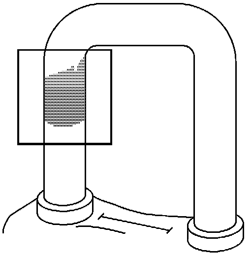
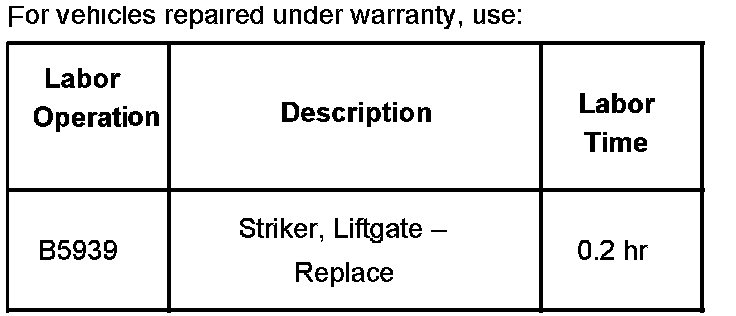

Body - Squeak Noise at Rear of Vehicle Over Bumpy Roads
Bulletin No.: 06-08-66-010Date: June 27, 2006
TECHNICAL
Subject:
Squeak Noise at Rear of Vehicle Over Bumpy Roads (Install Washer)
Models:
2007 Cadillac Escalade, Escalade ESV
2007 Chevrolet Suburban, Tahoe
2007 GMC Yukon XL, Yukon Denali, Denali XL
Condition
Some customers may comment that there is an objectionable squeak noise at the rear of the vehicle when driving over bumpy roads.
Cause

The liftgate may have been built too high to the body opening, which may cause the latch to rub against the striker. Refer to the illustration above.
Correction
1. Remove the liftgate striker trim.
2. Remove the striker.
3. Insert the washer under the striker.
4. Install the striker.
Tighten
Tighten the striker bolts to 25 (+/- 5) Nm (5.6 lb ft).
5. Install the liftgate striker trim.
Parts Information
Warranty Information

For vehicles repaired under warranty, use the table.

Disclaimer